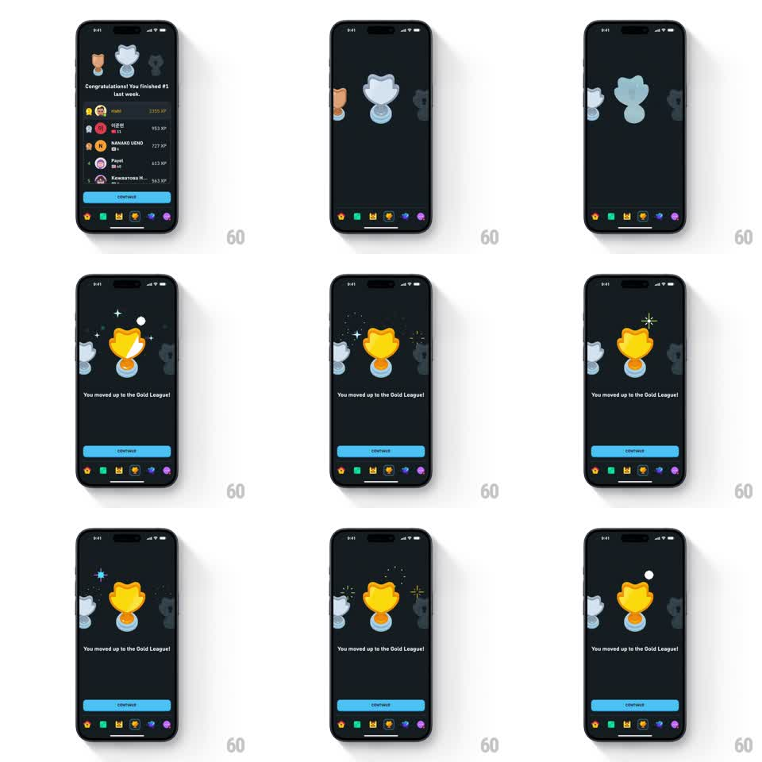

Media
Frame-by-frame

Rebuild this animation 1:1: Duolingo's league promotion reveal - the leaderboard slides off as a row of three league trophies (bronze, silver, gold) slides in like a carousel, then the gold trophy springs forward to center, oversized and gleaming with confetti and sparkle bursts, over "You moved up to the Gold League!" with a blue CONTINUE button.

Rebuild this animation 1:1: Duolingo's league promotion reveal - the leaderboard slides off as a row of three league trophies (bronze, silver, gold) slides in like a carousel, then the gold trophy springs forward to center, oversized and gleaming with confetti and sparkle bursts, over "You moved up to the Gold League!" with a blue CONTINUE button.
## Integration
Integration: stack-agnostic spec - springs given as stiffness/damping, timed motions as duration + curve; map every value to your framework and animation library of choice.
## Scene
Dark Duolingo screen, bottom tab bar visible. Start: the leaderboard ("Congratulations! You finished #1 last week", ranked list with XP). Reveal: three trophies in a row - bronze left, silver center, gray right - then the center slot fills with a big gold trophy. Text: "You moved up to the Gold League!" Blue CONTINUE button.
## Motion spec
Pattern: carousel trophy reveal with spring pop and confetti.
- The leaderboard slides up and off (300ms ease-in) as the three-trophy row slides in from the right (300ms ease-out), small and evenly spaced.
- The row slides left, centering the silver slot (250ms); the silver trophy flips/shrinks aside (scale 1 -> 0.6, 200ms) as the gold trophy springs in at center (scale 0.5 -> 1.15 -> 1, spring ~300/15).
- Confetti and sparkle stars burst around the gold trophy (10-14 pieces, 500ms, gravity fall) with a gleam sweep across the cup (white shine wedge, 300ms).
- "You moved up to the Gold League!" fades in below (250ms); CONTINUE slides up (280ms ease-out).
- Idle: the gold trophy bobs gently (translateY +/-3pt, 2.2s sine) with occasional sparkle twinkles; the flanking trophies stay small and dimmed.
## Calibration
- The gold trophy is much bigger than its neighbors - scale contrast carries the celebration.
- Confetti fires once on the pop, not continuously.
## Reduced motion
Gold trophy fades in at center with text and button; no confetti.
## Don't miss
- The flanking bronze and gray trophies remain visible, dimmed, framing the gold one.
- The tab bar stays put through the whole transition.